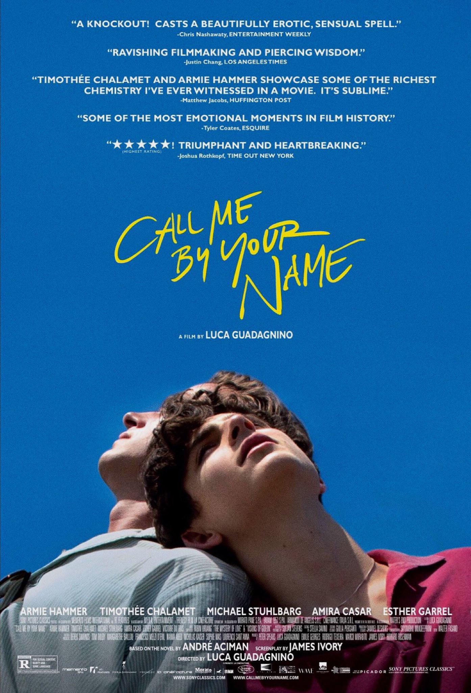
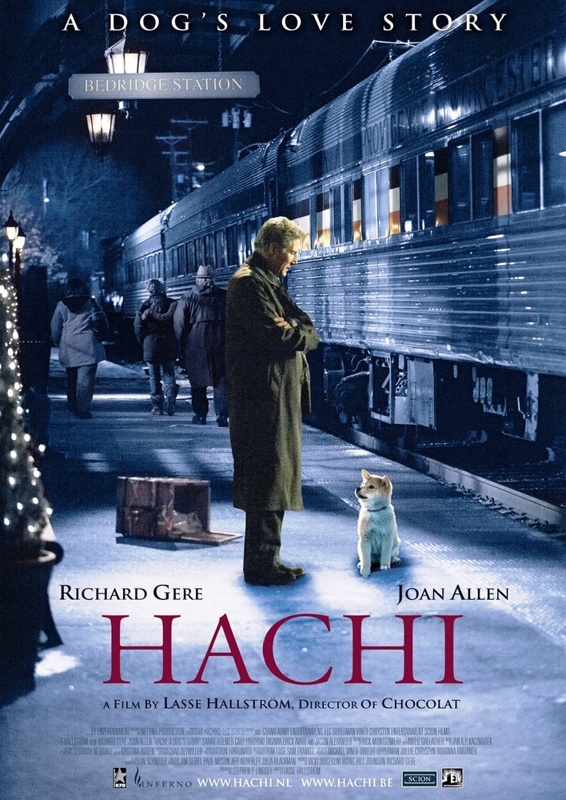
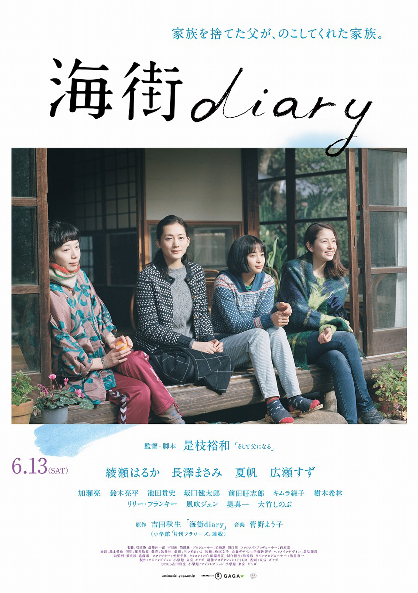
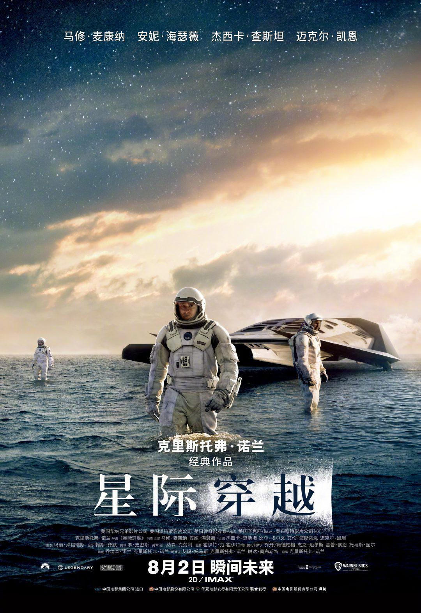
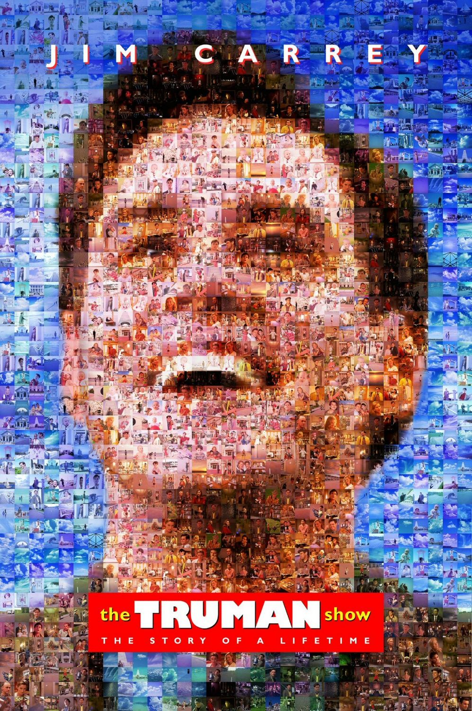
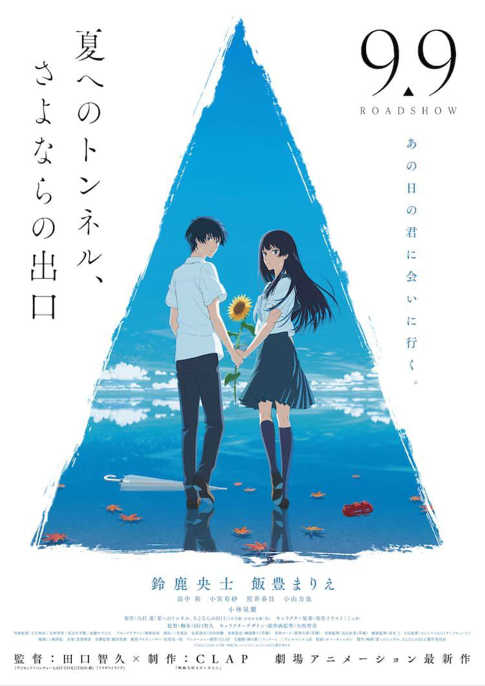
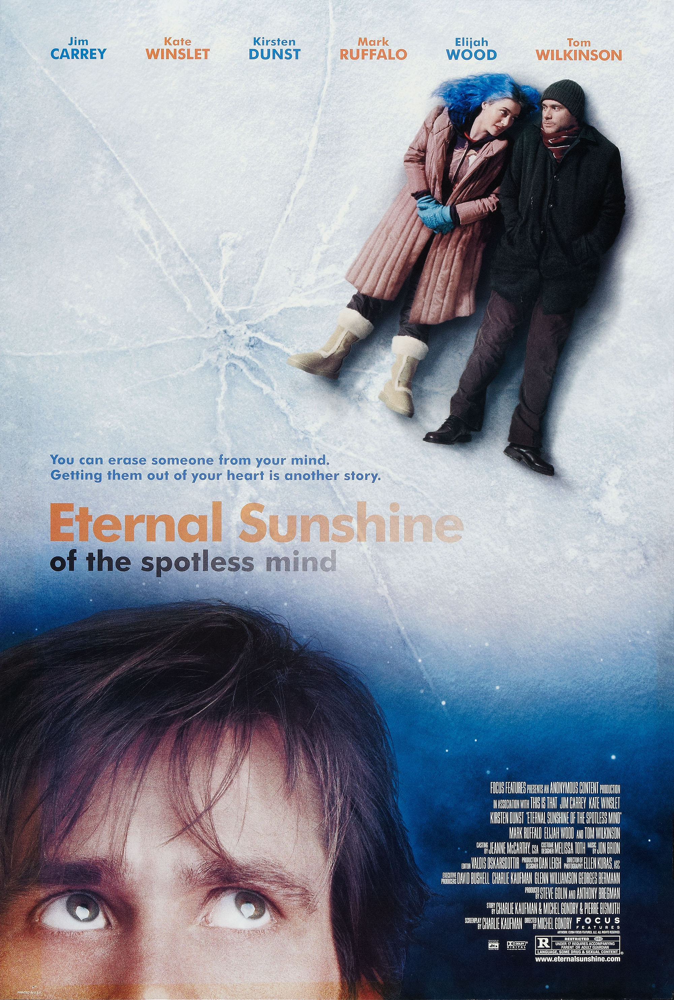
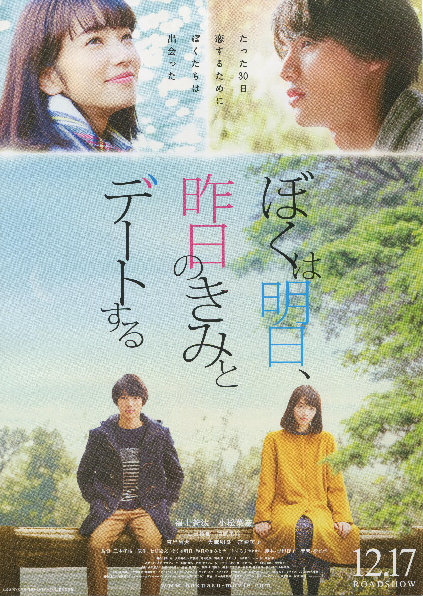
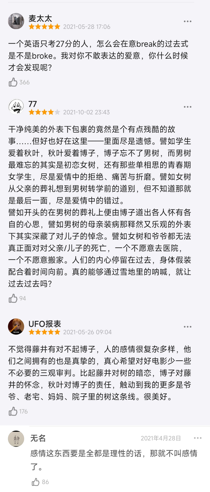
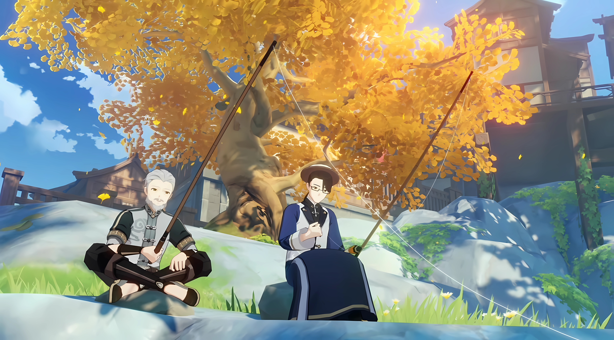

2024
05-02

电影中插入的公主与骑士的对话很有意思，“to speak or to die”到底哪个更难呢？能感觉到两人在一起前一直在试探彼此，能感觉到彼此都在对这段感情有些担忧和犹豫，但是最终还是抵不过强烈的爱意。call me by your name，用彼此的名字称呼对方，我中有你你中有我，融为一体，很浪漫的表述。明知这是一段没有结果的感情，明知自己会受伤，却还是毫无保留的付出自己全部的感情吗？也许就像Elio父亲最后所说的，年纪越大我们对一段新的感情能付出的也就越少。满腔强烈的爱意和奋不顾身的勇气，是一段刻骨铭心的爱情，也是我们年轻的证据。欲望和爱情还是有区别的，单纯的肉欲毫无负担，而爱情却会让人感到患得患失，就像爱情是一种感觉，而不是一种肉体的触觉。电影的钢琴背景乐很好听，有一种夏日的清爽轻快感。最后elio坐在火炉前，一会儿落泪，一会儿抿着泪水笑了，一会儿眼睛里又恢复了冷漠，仿佛在短短几分钟内，他把那个夏天又度过了一次，且此生还要度过很多次，或许这就是青春疼痛、生长痛吗…？学会去感受生命中的一切，在年轻的时候拥抱所有感觉和情绪，就像一种修行和成长。I envy you the pain，或许父亲想说的是这个吗？不过影片里被无辜卷入的女性还是挺可怜的，她们也是为了爱义无反顾地献出了自己啊，最终却一句男主的肯定都没有得到，男主有点渣…
“在你猝不及防之时，上天就狡诈地找到了我们最脆弱的地方，现在你可能不想去感受什么，或许你从来不希望去感受什么，或许你不愿意向我倾吐这些事情。
但是，请你感受你所感受的，你有过一段美好的友谊，也许超越了友谊，我很羡慕你，在我看来，多数父母会希望这一切烟消云散，祈祷他们的孩子就此放手。但是，我不是这样的父母，为了快速愈合，我们从自己身上剥夺了太多的东西，以致在三十岁时，自己的感情就已破产。
每开始一段新的感情，我们能给予的便越少，但是为了让自己不要有感觉，而不去感觉，这是多么的浪费！
如何过你的一生是你自己的事情，你只要记住，上天赐予我们的心灵和身体只有一次，而在你领悟之前，你的心已经疲惫不堪了。至于你的身体，没人愿意再看它一眼，更没有人愿意接近，现在，你充满了悲伤、痛苦，别让这些痛苦消失，也别丧失你感受到的快乐。“
05-02

有一个地方我很有感触，教授曾经说过小八不会去捡球，除非有特别的理由，而在那天八公突然学会接球的契机，会不会是八公发现教授已经命不久矣了呢？所以教授在自己快死前对妻子说出那样感谢的话语，所以他其实知道自己已经…教授真的是一个内心和精神内核都十分强大的人，也是一个很温柔可爱的人。狗狗与人之间的感情总是那么纯粹，狗狗的小世界只装得下主人，十年如一日的等待和守候，真的让人动容…有生之年，真想去涩谷的那个火车站看看八公的铜像啊
“八字的精神意义是上通天堂，下达人世。”
“他们教导我忠诚的意义，永远不要忘记你所爱的人。”
“一尊八公的铜像坐落于涩谷火车站外，他一直等待的地方。” Hachi
05-02

今天看了诺亚推荐的寄生兽灰色战队！总结来说真的挺惊喜的，剧情环环相扣引人入胜，各种人物的形象也很饱满，直到最后几集才终于揭晓了这些寄生兽的最终目标——夺取市长的脑子，从而控制整个人类组织。在此之前我没看过原著漫画和动画，改天可以去补一补，这种同样世界观下的衍生剧真的做的很不错呢，不愧是创作了釜山行的导演。最后一集的彩蛋，菅田将晖饰演的泉新一露面真的挺惊喜的，也算是与原作的联动，这样反而更期待第二部了啊ww
我很喜欢男主薛强祐的人物形象，虽然是一个痞子，但是心里仍然深深记挂着姐姐和妹妹，虽然嘴上总是不饶人漠不关心的样子，但是男主最终还是会以身试险，是一个很有情义的人，因此当他被自己组织的老大和兄弟背叛时，真的挺心疼他的。女主也是，一直觉得自己是不被人接受和喜欢的人，所以总是自暴自弃，优柔寡断、懦弱的性格也在之后变得越发坚定和坚强，是一个善良的好女孩，即使这个世界总是创伤自己，但是却仍然热爱着身边的人和世界。海蒂的观念前后转变也很有趣，一开始只是自私地想要保护自己，不过后来也因为在与秀仁和强祐的相处下逐渐明白了很多人类社会的道理，不过海蒂总是保护着秀仁怪让人觉得挺好磕的怎么办？
我在这部片子里感悟到的道理应该就是：一个人的力量虽然相比寄生兽来说很脆弱，但是人与人之间凝聚在一起的组织会让人类变得强大，自私自利地追求个人利益和互相背叛虽可能成功一时，但最终还是会被集体团结的力量所打败。不过我还是挺好奇创造寄生兽的那个人类到底是谁？改天补一补原著~
“你们认为只要呼吸就是活着吧？但人类不同，对人类来说，要活在人群之中才是生存。”
04-30

“有些电影惊心动魄是在提醒你它是部电影，而有些电影平平淡淡是在告诉你这是生活。”
美食、美景、美人、温情人际，再加上一些小风小波…这就是生活啊。这是日本电影描摹生活的一种典型方式，特别恬淡平和，也有矛盾、悲伤、无奈，但永远没有惊涛骇浪，一切波澜都能在时间的流淌中渐渐消失于无形。再美好的生活也会有迷惘有困惑有死亡亦会有悲伤，何不看淡一切微笑面对一切珍惜身边的每个人每份经历每个绝无仅有的瞬间呢。
电影始于葬礼，终于葬礼，但一切却很柔和。海边的镰仓，海边的轨道车，海边的餐厅，海边的家。仲夏烟火配上梅子酒，涛涛海浪配上沙丁鱼，平淡细腻臻于化境，四季轮回，生老病死，终又回归了生活。海水、樱花、梅子酒，巧妙的勾起记忆中的味道，平淡、温情又美好的姐妹亲情。感觉每个女孩应该都能在四个姐妹里找到一丝自己的影子吧，我的话更像千佳吧，又有点像铃…
“铃，来镰仓吧，我们四个人一起住吧！我们家虽然很老旧，但是很大哦！” “我去。”
“那孩子虽说是妹妹，可是破坏了你们家庭的人的女儿。” “这样的话你又得晚嫁几年了吧。”
“活着的东西都是很费工夫的“
“我在这里没有问题吗？只要有我在，就会有因我而受伤的人。”
“在去世前，依然能感到美丽的东西是美的，好开心。”
“爸爸虽然是个失败的人，但说不定是个温柔的人，因为为我们留下了这样一个妹妹。”
04-26

虽然是科幻电影，但这部电影的核心仍然是亲情和爱，每个人物的形象都是那么鲜活和立体。每次看关于探索宇宙的科幻电影的时候，我总是会不自觉地感叹人类的渺小，也不自禁会被人类执着于探索星河的不屈精神所感动。就像真正拯救了人类的不是科学，而是这份彼此之间联结的爱，爱是唯一可以穿越时间空间的东西。
对我们来说二维空间就是一张纸，从纸的一端走到另一端最快的方式是把它折起来。 对五维生物来说三维空间也是一张纸，是可以折起来的。 他们不仅可以将三维空间折起来，对他们来说时间也是实体的存在。 根据相对论，黑洞附近的引力太大，时间会变慢，米勒星球1小时等于地球7年。 米勒星球的配乐《Mountains》有密集的滴答声，每滴答一次，地球上就过去了1天。 《星际穿越》的黑洞并不是随便做的，电影上映5年后NASA发布了一张黑洞的效果图，证明了《星际穿越》的黑洞模型是严谨而准确的。 为了拍玉米地，诺兰真的种了一片玉米，拍完电影卖玉米还赚了钱。 为了拍五维空间，诺兰真的搭了一个五维空间的景。 也许100年后的人们看这部电影会比我们更加感到震撼，因为他们会发现这部电影很多设想都是对的。
“现在不需要工程师了，我们不缺电视或者飞机，只缺食物，这世界需要农民，尤其是你这样优秀的农民。新书里解释了阿波罗计划是假的，只是为了诱使苏联拼命砸钱。我觉得作为政治宣传是不错，让苏联向火箭和各种没用的机器上砸钱，最后导致解体。如果不想重蹈20世纪不计投入过度浪费的覆辙，就必须教孩子关于这个星球的知识，而不是怎样离开它的科幻故事。”
“我们曾经仰望星空，思索自己在宇宙中的位置。现在却只能面朝黄土，顶着沙暴思考。”
“地球上的大气有80%都是氮气，可我们呼吸不需要氮气，枯萎病需要，随着枯萎病蔓延，我们呼吸的氧气越来越少。人们还没全饿死，就开始窒息而亡了。你女儿这一代，会成为地球上最后的人类。我们不是要拯救地球，我们打算离开地球。你是我们最好的飞行员。”
“在土星附近出现了时空翘曲，出现在48年前，它通往另一个星系。有人故意放在那，不管他们是谁，好像都是想帮我们，那个虫洞可以带我们去其他星球。他们把宜居的星球弄到了我们附近。十二个可能的星球在曼恩博士的带领下，那些最勇敢的人搭乘十二艘游骑兵号踏上了征程。——拉撒路计划。”
“那上面一个小时，相当于地球上七年。” “我可是个老物理学家，我害怕的是时间。”
“这一切都是骗局。你把我们抛在这里，窒息而死，饥饿至死。” 原来从来没有planA,只有planB…
“他从来没想过把人类送出地球。那个引力方程无法调和相对论与量子力学，还需要更多数据，需要看到黑洞内部，我们的宇宙里，奇点没法单独存在。黑洞的引力极其强，奇点会永远隐藏在黑暗里，在视界之外，所以我们叫它黑洞。我们看不到视界之内，视界之外是完全未知的…你父亲不得不找出另一条可以拯救人类的途径——B方案，殖民计划。”
“在这里，时间只是物理维度，你也知道可以跨越时空施加作用力，通过引力传递信息。引力可以跨越维度，包括时间。”
“他们把我们带到这里，不是为了改变过去。” “不，根本不是他们带我们来的，而是我们自己。” “他们不是生物，就是我们。” “那不是幽灵，是引力。”
“我以为他们选择了我，但他们选的并不是我，而是她（墨芙），为了拯救世界。这里全是她的卧室，每个时刻都在，有无限个空间，他们可以操控无穷的时间和空间，都放在这，不受任何规则束缚。他们无法找到定位具体的时空，他们没法交流，所以我才会在这。”
“我和墨芙之间的关系，是可以量化的，这就是关键。”
04-14

今天看了斑比提到的电影《楚门的世界》🎬️居然还是1998年的老电影了，9.4的高分在豆瓣电影总榜排在第十名。在这个充满了谎言和虚假的世界，被操控的人生，唯一的真实是楚门自己。在看到最后那一幕，楚门终于穿过风暴和雷电抵达了这个世界的边界，当楚门踏上阶梯的时候，心里不禁有一些感动，向导演和这个世界鞠躬做最后的告别，影片也结束了，不知道当楚门去往另一个世界生活之后，又会遇到怎样的故事呢？相信楚门会和那个一直思念的女孩重新相遇并在一起吧，这是最好的结局了。最后导演对楚门说外面的世界也同样充满虚假和冷漠，反而这个世界更加安定，但也正如评论区说的：“每个人都向往自由而不仅仅是安定”，宁愿要残酷的现实，也不愿接受虚假的美好和善意。
在《肖申克的救赎》中有这样的一句话：这些墙很有趣。刚入狱的时候，你痛恨它，诅咒它。时间久了，你习惯了其中的生活。最后发现自己越来越离不开它。这就叫体制化。 楚门长达30年的时间里，都没有发现自己身处在一个被拍摄的环境中，导演解释说：因为人们都太容易接受现实了。 人性的弱点就是太容易被“驯化”了，王小波说，我们都是被“锤”的牛，他说，生活就是个缓慢受锤的过程，最后变得像被锤了的牛一样。 人类之所以能够适应这些看似“变态”的环境，究其原因，还是没有见识到其他的活法。 楚门从小生活在桃源岛上，所以他不知道在桃源之外有完全不同的生活，而我们，也大部分被每天的工作和生活轨迹所困，忘了外面其实有一个更大的世界。 我们无法朝一个自己看不到的世界努力，所以大多数人在桃源导上困顿了一生。
“全世界似乎都在绕着我而转…”
“楚门听我说，外面的世界跟我给你的世界一样的虚假，有一样的谎言，一样的欺诈，但在我的世界，你什么也不用怕，我比你更清楚你自己，你害怕…所以你不能走。我看了你的一生，你出生时我在看你，你学走路时我在看你，你入学我在看你，还有你掉第一颗牙齿那一幕，你不能离开，你属于这里，和我一起。”
“如果再也不能见到你，祝你早安，午安和晚安。”
04-14

我发现这些时间穿越的影视作品，大部分都是在传达一个理念，那就是活在当下。放下过去的执念，走向新的开始，去爱现在身边的人。男主执着于过去对妹妹因自己而死的愧疚，原本圆满的家庭也仿佛因为自己而变得支离破碎，所以执着于回到华伶的身边…
看了豆瓣的评论，有这一条“丢掉手机和手机失而复得的设计，当丢掉一个“尚存在之物”时，它也就拥有了“失而复得”的能力，因此它能接收到另一维度的短信。” 想起男主抛下女主独自一人穿越隧道的时候，发完最后一条短信后就把手机丢掉了，之后和妹妹重聚之后又意外拿回了手机，并且能收到女主之后八年里给自己发的邮件，本来原先两人测试的时候发现邮件是无法收到的…但如果这些邮件也是失去的东西，并且男主也想再次收到女主的邮件的话，那就说得通了，也就能解释为什么男主还能收到八年间女主发给自己的邮件…不过女主的爱也很纯粹，这八年以来一直在给男主发邮件，讲述自己漫画创作的历程，“你借我的伞，已经有点生锈了” 那把伞也一直保留着…女主的生活一直在前进着…而男主穿越隧道后，虽然实现了待在妹妹华伶的身边的愿望，但是男主的时间却好像永远停滞在这个假象的空间…不过最后男主和女主还是重聚了，整整十三年的时间过去了…
但是话说有个bug…之前是说进入隧道就能得到自己想要的东西，越深入得到的越多越好，里面三秒就是外界的两小时，但代价是迅速变老，不过后面男主验证了不是得到想要的，而是拿回失去的东西。但是男主独自一人进入隧道后又醒悟回到入口之后，感觉男主的年纪还是没变啊，反而女主的年纪倒是增长了十三岁…？？就好像外面的世界在日新月异，但是男主的时间还是没多大变化的感觉…
如果可以用几年甚至几十年的时间去换回一个已经失去的东西，我觉得还是不太值得的。因为有些失去的东西不是拿回来了就能回到美好的过去的，毕竟时间是一个很残酷的东西，它会改变很多东西，说不定当你终于拿回失去的东西，却早已物是人非，亦或者只是一个虚假的意象罢了…就像男主虽然见到了死而复生的妹妹，但是两人却只能困在这个狭窄的小屋里生存不是吗？妹妹其实并没有真的活过来了，这只是一个假象的空间罢了，可活动的空间是有限的…所以人还是得活在当下，真正爱你的人肯定是希望你能一直向前走向前看的。
“你能理解我的感受，我愿意为了你，舍弃这个世界的一切。”
“浦岛隧道只能取回失去的东西。” “不是失去了，都是我自己抛弃了。”
“我想待在华伶的身边，但是现在…我有想见的人！”
04-07

和艺俊一起看的第二部电影《暖暖内含光》，据说影片的“暖暖”二字并不读作nuan，而是暧昧的暧，到底有什么深意呢？影片的英文原名是“Eternal Sunshine of the Spotless Mind”，译作“美丽心灵的永恒阳光”，这句诗是出自蒲柏的《艾洛伊斯致亚伯拉德》的第209行，上下文是这样的—— “How happy is the blameless vestal’s lot! The world forgetting, by the world forgot. Eternal sunshine of the spotless mind! Each pray’r accepted, and each wish resign’d，意思是——纯洁的维斯塔处女是多么快乐！ 遗忘了世人，也被世人遗忘， 美丽的心灵闪烁永恒阳光！ 每次祈祷都被接受，每个愿望都可以放弃。”…结合这部电影的故事，遗忘一个人，又或者被人遗忘，是一件“快乐”的事情吗？对于当爱情崩塌的男女主来说确实是这样吧，消除和这个人在一起的所有回忆，就好像从没有遇见过，忘记了分手的悲痛，最终会收获快乐吗？但是真正相爱的两人，即使是消除了彼此的记忆，最终却还是会互相吸引再次陷入爱河，就像男女主，Mary和Frank医生一样…
让我觉得有趣的剧情片段是，在记忆清除程序运行时，男主约尔想尽办法把克莱斯汀藏到记忆最深的地方，也就是约尔的童年…我们看到了童年时的约尔，我发现约尔小时候曾经受到过霸凌，或许这是男主的性格有些沉闷的原因吗？记得男主说过喜欢克里斯汀的一个原因是因为和她相处会让人忘记世俗的烦恼，从男主向医生请求消除记忆时对女主的控诉中，其实能感觉到男主的性格是那种很在乎世俗他人目光的人，而克里斯汀却活得很自由爽快，染各种亮丽颜色的头发，想做的事说做就做，并不在别人的目光和评价，感觉男女主这种组合迟早会出现分歧和分裂似乎也早有预料，就像前几天看的爱乐之城中的男女主一样…只能说恋人之间应该多多互相交流灵魂更深处的东西，爱着对方的独特的同时，也要能够接受彼此的阴暗面才行，这样的爱情才能细水长流。
04-04

因为艺俊在泡泡上说一起看爱乐之城，所以今天补了这部早有闻名的经典爱情电影，我发现我以前从来都不怎么看以爱情为故事主基调的影视作品来着，好像自从喜欢上五小漫之后，感觉也不是那么抗拒爱情电影了…甚至想要去体味这种感觉，爱情这种复杂的情感…
电影看到最后，得知女主还是没有和男主在一起，而是和另一个人结婚并生子，过着幸福的生活，而男主却好像还是只有一个人，似乎一直在等待着她，爱着她。看着最后的男女主在一起的一幕幕不是真实的，眼泪流了下来…为什么两个明明相爱的两人在互相追寻梦想的路上最终还是走散了呢…
冬春夏秋四个季节四个篇章，对应了男女主邂逅、相知、相恋到最终分离的故事。是追梦人之间的灵魂的互相吸引让他们走在一起，是爱情让失意的两人相互取暖，那段时光是多么幸福而又甜蜜，就好像生活有再多的艰险和疲惫，也能扶持着走下去…难道为了追寻梦想，就必须放弃抛弃什么吗？梦想和现实，总是那么难两全，追寻梦想的人们总是被他人当做傻瓜，可是为什么要在乎他人的看法呢？男主感觉到了女主母亲的压力，而选择放弃梦想加入与自己理念不同的乐队，因为巡演导致两人经常分隔两地…女主看着离梦想渐行渐远的男主，想要劝说，但却因为男主的话语伤害到…女主也因为他人的指指点点和嘲笑而终于崩溃，放弃追逐演艺事业，回到老家…如果两人的爱情没有任何其他人其他事物的介入就好了，不在乎那些外来的质疑和嘲笑，始终坚信自己是一块金子终会发光，并为之努力再努力，但是在这个现实的世界又哪能那么容易呢…
03-31

是虎子在泡泡上推荐一起看的电影！初次看到影片名的时候还楞了一下，想着是不是女主的时间在倒流，而男主的时间在前进？看了影片之后也有些似懂非懂，感觉应该是和我猜想的一样吧，男主小时候遇到了30多岁的女主，而女主小时候又遇到了同样已经30多岁的男主，小时候的男主并不认识女主，而女主认识他；小时候的女主与30多岁的男主遇见时也不认识男主，但是男主看着小时候女主的眼神确是那么深情…按照女主的解释，两人唯一能够交汇在一起的日子只有当两人同龄的时候，这仅仅的30天。就像是两条永远不会交汇的平行线，两人似乎永远身处不同的世界，唯一能够交汇在一起的日子也只有这30天，真是太残忍了。
当男主醒悟到这一点，对这段爱情感到无比痛苦，眼睁睁看着爱人一天一天变得生疏，不再记得昨日一起快乐的回忆…但是当男主想到两人第一次牵手时，女主哭了，因为对于男主来说的第一次牵手，对于女主来说却是最后一次，所以女主才会哭泣…那时我也好心疼女主啊，那种有话口难开的感觉，独自一人承受着真相和现实的撕心裂肺，女主真的很坚强，也真的深爱着男主。男主也在女主5岁的时候拯救了差点没命的女主，看得出即使结局两人因为时空分离了，但男主也一直在寻找着女主，并深爱着女主，默默守护着女主。
“我们五年才能见一次面，只有在五年一次，月满相交的30天之间才能见面，你十岁的时候见到了未来的我，你五岁的时候我们也见过，在宝池。”
01-02

今天看了岩井俊二的电影《情书》💌
其实之前一直想看来着，但是心情总是很浮躁看一点就看不下去了，感觉是需要静下心来慢慢欣赏的作品。
好吧，我承认我一开始把藤井树和渡边博子搞混了，我还在寻思怎么女主有两幅面孔，一会儿淘气一会儿内敛的😂直到看到渡边博子去往藤井树家，两人相会的时候我才反应过来，哦——原来是两个长得很像的人而已啊，原来之前的故事线一直都是穿插着两个人的生活，sorry我的反射弧比较长……不过还是很惊叹，没想到居然是一个人同时饰演两个性格截然不同的角色，感叹一句中山美穗的演技很好，两个角色都演的很自然~
唯一让我泪目的片段，是爷爷在大雪的夜晚，执意背着病危的藤井树去往医院的那一段，莫名就是很戳泪点，爷爷和母亲回想起了死于肺炎的藤井树的爸爸…就好像这件事明明大家口头上都说已经释怀了，但是其实大家心里仍然对父亲的死亡是耿耿于怀的吧…
一直看到最后，我一直在想女藤井树那时到底喜不喜欢男藤井树呢？男藤井树又是否喜欢女藤井树呢？这个问题的答案，直到看到电影最后书中夹着的借书卡背后的画像，我才终于明白…原来男藤井树是暗恋过女藤井树的，但女藤井树似乎并没有那个心思，可能是一根筋或者是沉迷于学习吧……只能说大哥你真的很能藏小心思，我直到看到借书卡我才知道你原来真的有暗恋过，之前的所有互动我都以为你只是一个直男……
不过话说回来，难道男藤井树真的是因为博子长得像女藤井树才会向博子求婚的吗？我觉得这个我有点难以接受哎，这不就等于是把博子当替身了吗？不过好在博子现在有了新的恋人，想必经过此事之后，博子应该能够真正地走出这段逝去的感情，投入现在这份感情之中了吧，也未尝不是一件好事…
总结来看的话，我觉得电影的音乐真的很优美，整部电影就像是一首诗，一首含蓄内敛的情诗~然后岩井俊二的摄影美学也很不错，感觉哪天可以深入学习一下~两位藤井树的青春时期的回忆片段的剧情也很有趣，然后男藤井树的演员长得还挺帅的哈哈，就很有那种氛围~然后最后博子在雪地向高山呼喊的片段也是很经典了，结合电影前期博子那十分内敛的性格，能够像这样大喊一嗓子确实是很不容易呢！可以看出博子终于走出了那段感情。
如果说有意难平的地方的话，就是青春时期的男藤井树为什么不向女藤井树表白自己的心意呢？难道是因为要搬家转学而无奈吗？总之挺意难平的，最后还因为登山事故而死去，今天又是听一个已死之人的生前故事而感动的一天，请大家珍爱生命，这样幸福才会永存……
很好奇男藤井树是什么时候暗恋上的她呢？所以那些借书卡上写下的的一个个“藤井树”，其实是在表达着对藤井树的爱恋？感觉这样还挺浪漫的，这是一种只能在男女主同名情况下才能产生的一种暗恋的美感哈哈~但是有一说一，这种暗恋的细腻和美好，一定要从发现自己是白月光替身的这种角度来切入吗……
收集了一些还不错的影评~

2023
08-07
与其说是升级和进化
不如说是回到了最原本的形态
人们原本就有着强大的力量
只不过是因为种种事情封闭了他们原本的力量
从而遗忘了他们自身的强大
如果想要回到最初的形态
人们需要找到原本的自我
——女神异闻录5 人格面具的最终形态
07-20

03-29

【4K/60FPS】全站最高画质 86-超大型网恋奔现现场！蕾娜首次与辛见面
看到了B站大家剪的86不存在的战区的大结局，大家终于相见了！！！！这一幕真的好感动！！！！😭😭
看到这一幕，我真的觉得自己此生入ACG无悔了，这就是我热爱动画的理由啊！！😭😭
86，心中永远的神番！
01-20

权谋算计固然重要
更重要的却是恪守本心
权谋算计永无止休 应付不来的话
倒不如置身事外 反而能看清许多东西
每个人都有欲望 但不可被欲望掌控
不必计较暂时的得失 向着内心所想的方向前进就好
人生就像垂钓 容不得半点焦躁
做人做事 都不可急于求成
年轻的时候总想着证明自己
后来才意识到
事情并不总会如我预想的那样发展
把心沉下来才能继续前进
你还年轻 要耐得住寂寞 要相信自己 不必靠外物去证明你的价值
——天枢星.天叔